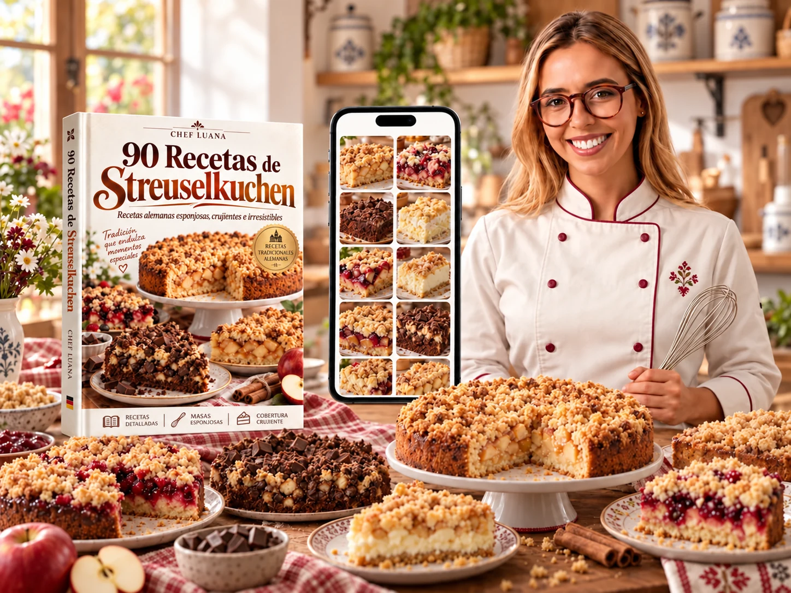
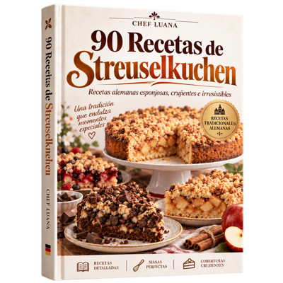

+165 Recetas Alemanas + 90 Recetas de Streuselkuchen
- 90 recetas de Streuselkuchen
- +165 recetas alemanas
- 255 recetas en total
- Los cinco bonos presentados arriba
Descubre combinaciones con frutas, cremas y chocolate, siempre con ese crumble dorado que a todos les encanta.

Compra 100% segura • 15 días de garantía • Acceso inmediato
Toca una página para ampliarla y conocer la receta.
Amas los pasteles caseros con cobertura crujiente.
Quieres conocer los sabores de la repostería alemana.
Te gusta variar los rellenos con frutas, cremas y chocolate.
Buscas recetas especiales para la hora del café y las reuniones familiares.
Quieres un paso a paso fácil de seguir.
Prefieres tener muchas opciones reunidas en un solo material.
Guías complementarias para lograr el crumble perfecto, variar los sabores y conservar tus recetas.
Llévate las 90 recetas de Streuselkuchen o elige la colección completa con +165 recetas alemanas y cinco bonos.

Accede al material y comprueba si encaja con tu rutina. Si no quedas satisfecha, solicita el reembolso dentro de los 15 días, según las condiciones de la compra.
Mira las conversaciones reales compartidas con la Chef Luana.
QUIERO CONOCER LAS RECETASTu próximo café puede tener el sabor de la tradición alemana.
Elige la colección que va contigo.
VER LAS OFERTAS